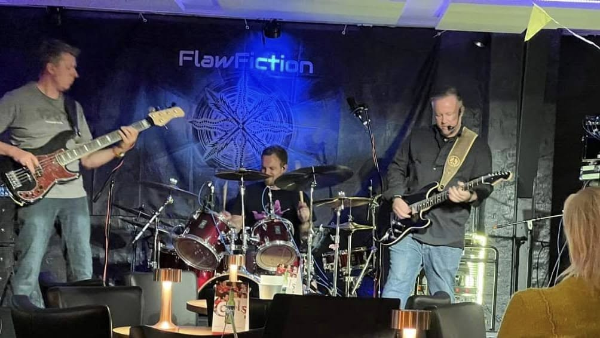

Hvis du elsker rockmusik med sjæl, variation og kant, så bør du tjekke FlawFiction ud.
De er det ultimative rockband, der ikke er bange for at udforske forskellige stilarter og kombinationer inden for rockgenren.
Uanset om du er til hård rock, funky grooves eller progressive eksperimenter, har FlawFiction noget for dig. De spiller med stor energi og passion, og de er ikke bange for at udfordre sig selv og deres lyttere.
FlawFiction består af Daniel på vokal og guitar, Morten på trommer og Karsten på bas. Den tætte rytmesektion har et imponerende samspil, hvor de skaber et bredt og rigt lydunivers, der understøtter Daniels kraftfulde vokal samt hans karakteristiske brølende og skrigende guitar.
FlawFiction er et band, der får dig til at føle dig levende, inspireret og rørt af deres musik. De tager dig med på en rejse af følelser og rytmer. De er et friskt og originalt pust til den klassiske rockscene og har meget at byde på.
Gå ikke glip af denne mulighed for at opdage FlawFiction i dag og nyde ægte rockmusik på en ny måde.
Daniel - Guitar & vokal
Daniel er en erfaren musiker, der udover at spille guitar og synge i FalwFiction, også er drivkraften og hjernen bag bandets tekster og musik. Med en passion for blues og rock bringer han en stærk vokal og kraftfulde guitarriffs til FlawFictions lyd. Hans sange er både relevante og meningsfulde i dagens verden, hvor han med ærlighed og indsigt behandler emner som klimakrisen, overfladiskhed, angst og livets mening.
Morten - Trommer
Morten er en energisk og alsidig trommeslager, der skaber bandets rytmiske fundament. Med en kraftfuld spillestil og en evne til at variere dynamikken i musikken, sørger han for, at FlawFictions numre får den rette puls og intensitet.
Karsten - Bas
Karsten er en rutineret bassist med stor erfaring. Han tilfører bandet et solidt groove og en dybde, der binder musikken sammen. Hans spil er præget af både teknisk finesse og en intuitiv forståelse for rytme og dynamik.